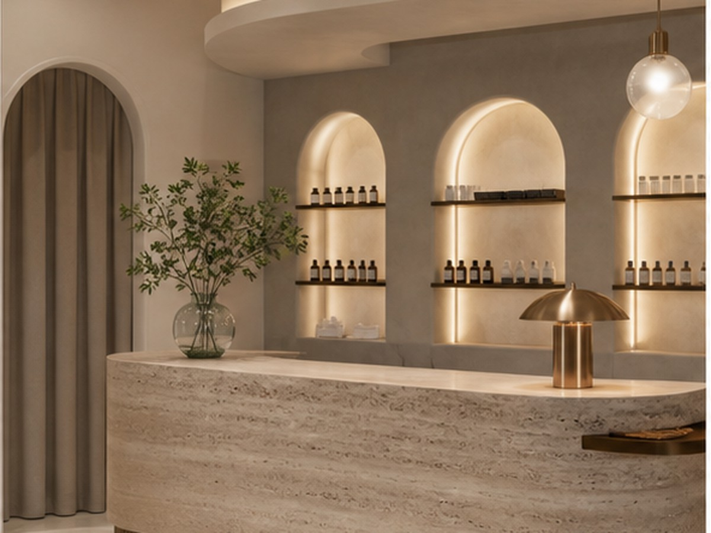
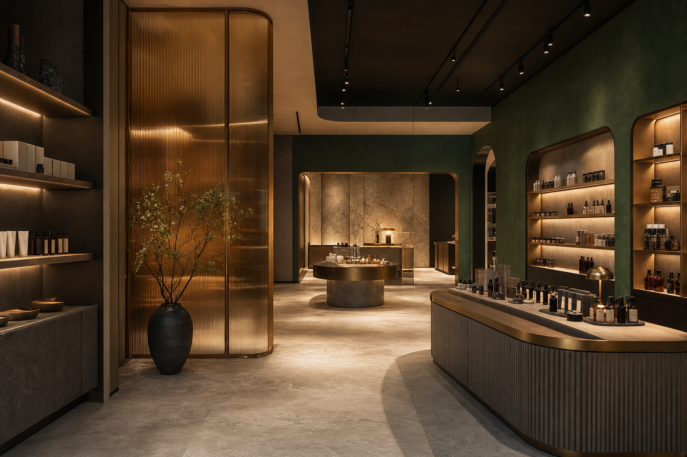
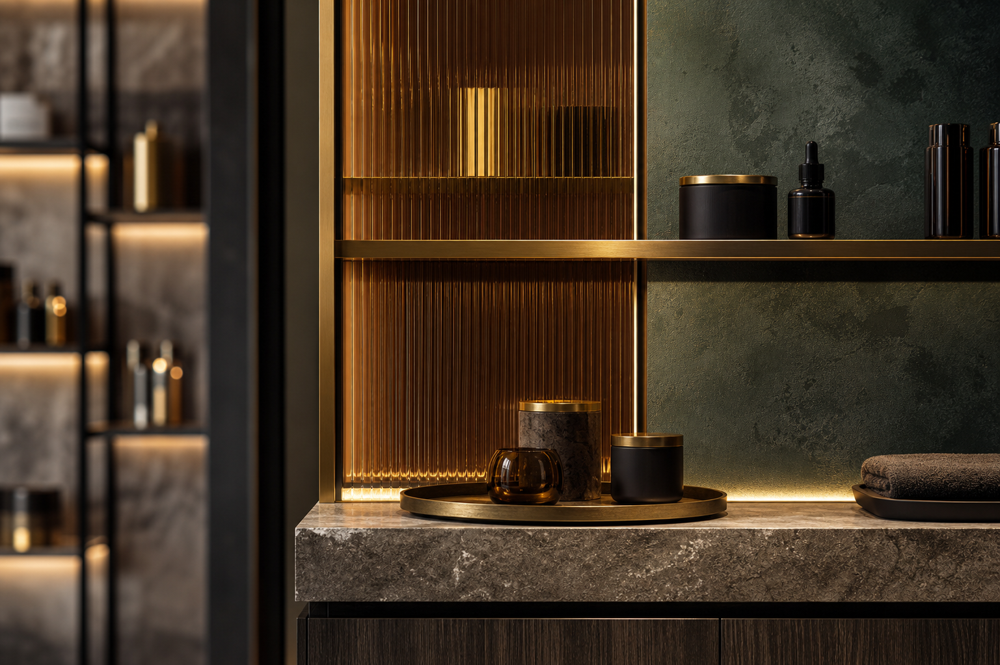

入口辨識
以材質對比與燈光層次加強第一眼印象，讓品牌門面在街景與社群分享中更容易被記住。

Case 02 / Commercial
商業空間的案例頁需要同時說明品牌、客流與記憶點。這個頁面以沉穩色調和強烈視覺節奏，呈現零售、美業與餐飲空間都能使用的展示方式。
Back to WorksProject Story
商業案例頁的重點在於讓業主理解設計如何回應營運。頁面以「入口吸引、行走節奏、拍照場景、收銀與服務流程」拆解，讓設計不只好看，也能連到實際商業目的。
以材質對比與燈光層次加強第一眼印象，讓品牌門面在街景與社群分享中更容易被記住。
透過展示區、停留區與服務區的分段，讓顧客自然移動，也讓頁面瀏覽有明確起承轉合。
將主視覺牆、材質局部與燈光焦點獨立呈現，讓案例頁也能成為品牌提案的一部分。


Next Case